Китай: культура, история, язык
你好。我名字叶卡特琳娜. 在这一页上，我将向你展示促使我热爱中国以及与中国相关的一切的原因。
Привет. Меня зовут Екатерина. На этой странице я покажу тебе то, что стало причиной моей любви к Китаю и всему, что с ним связано.
你好。我名字叶卡特琳娜. 在这一页上，我将向你展示促使我热爱中国以及与中国相关的一切的原因。
Привет. Меня зовут Екатерина. На этой странице я покажу тебе то, что стало причиной моей любви к Китаю и всему, что с ним связано.
Изучение истории Китая началось для меня с увлечения древними цивилизациями, но постепенно переросло в глубокий интерес к этой уникальной стране.
| 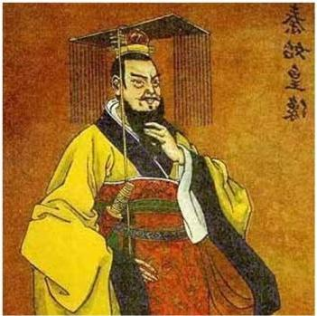 | 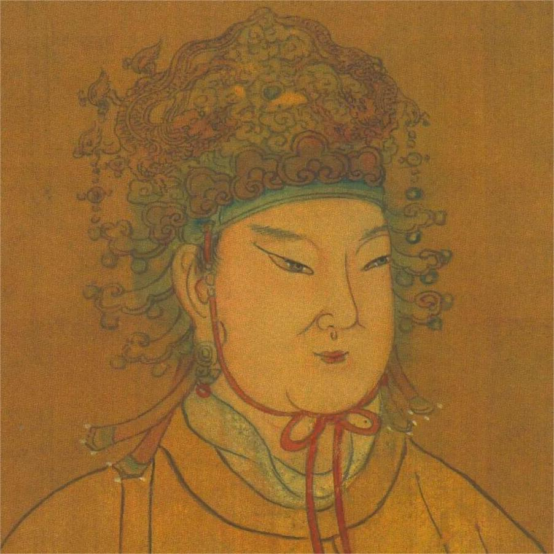 | 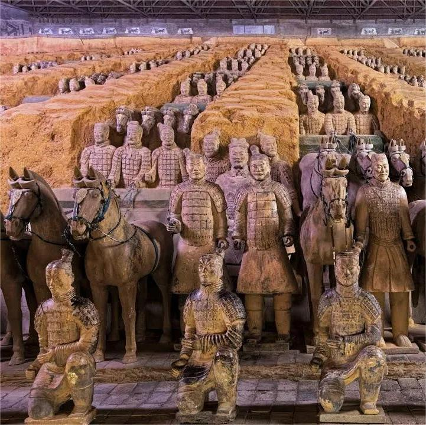 | |
| 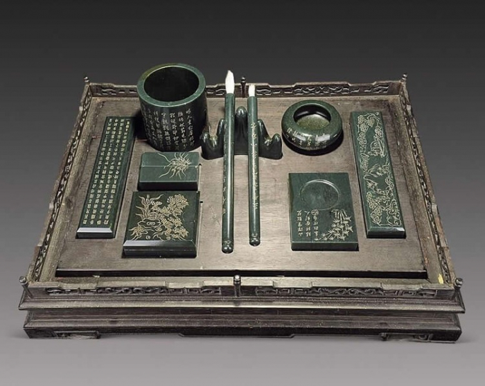 | 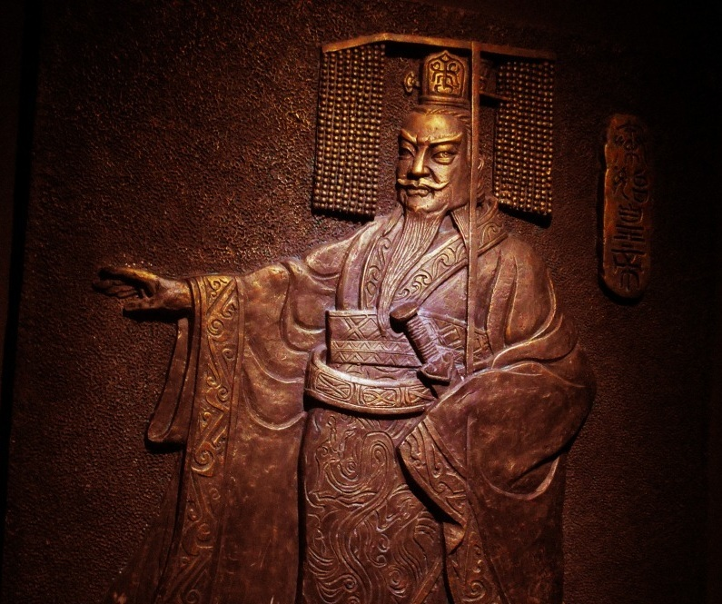 | 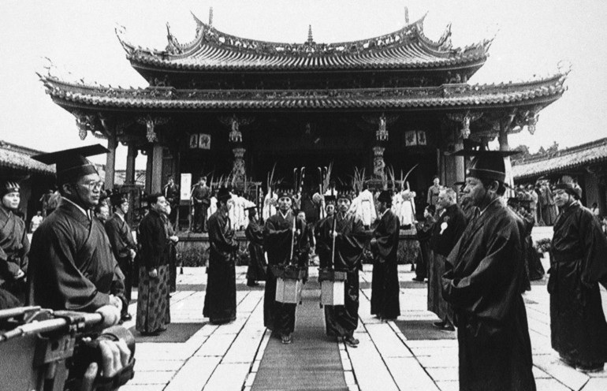 |
Богатство китайской культуры поражает своим разнообразием и глубиной, от древних традиций до современного творчества.
| 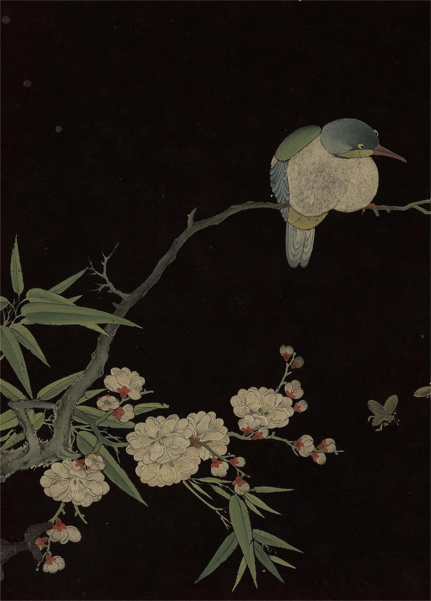 | 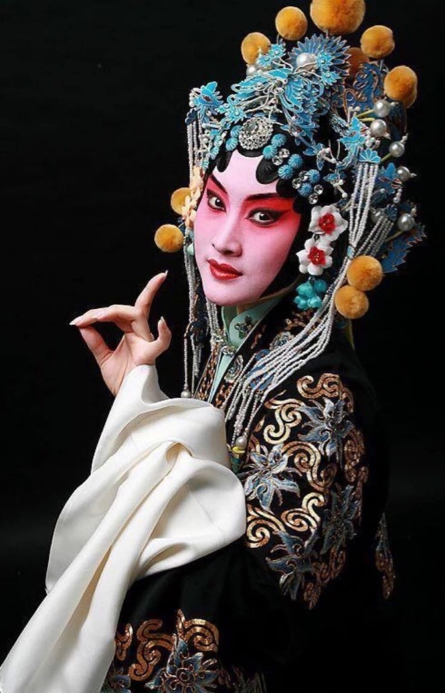 | ||
| 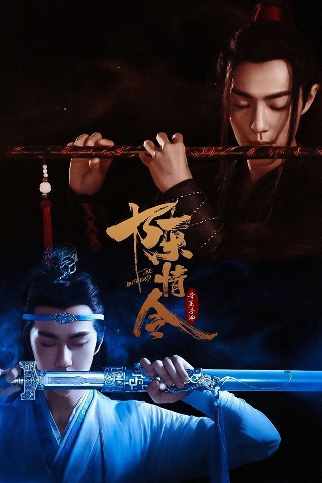 | 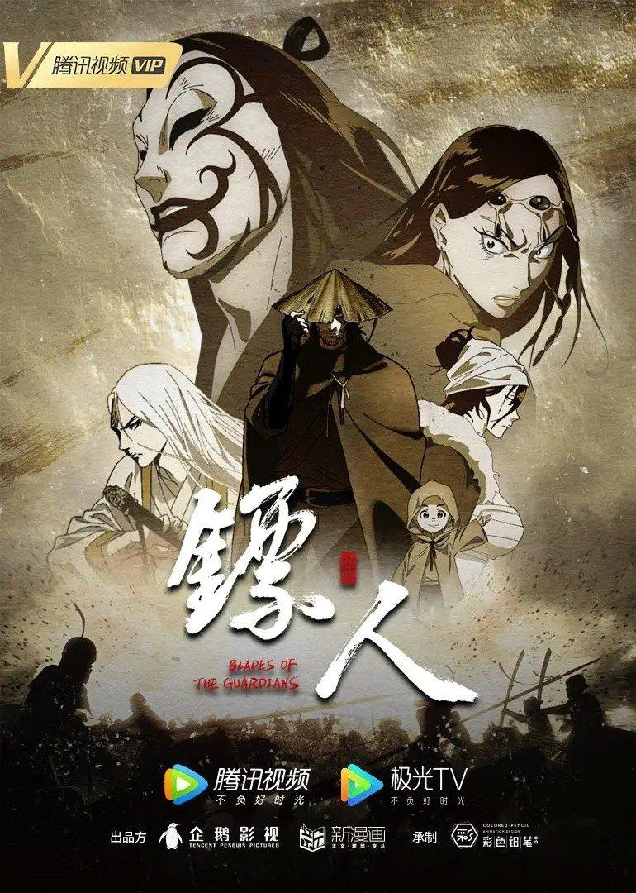 | 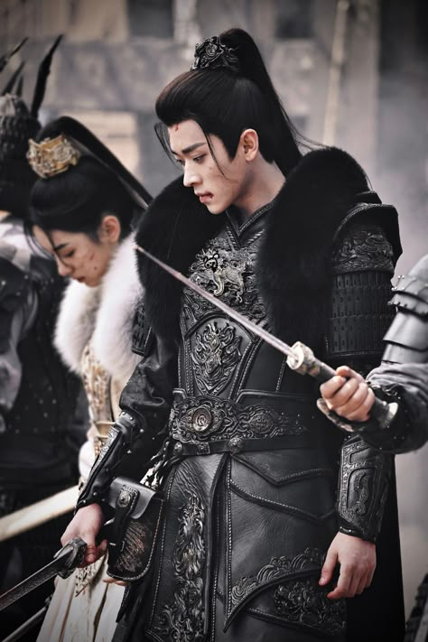 | |
| 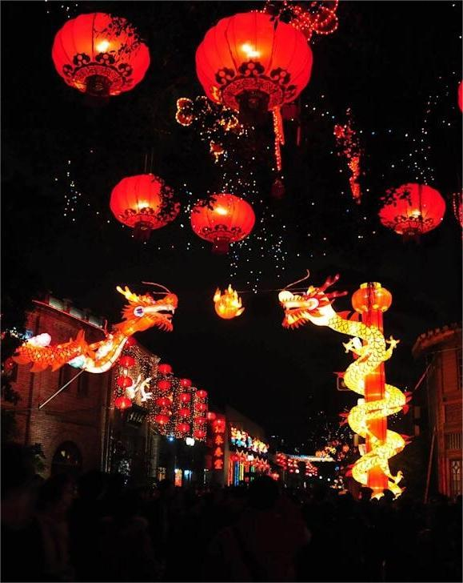 | 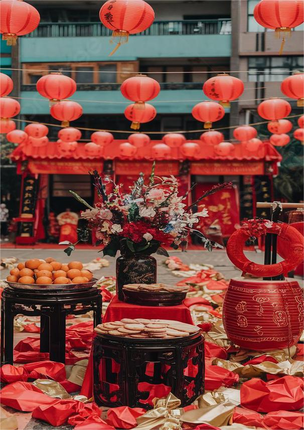 | 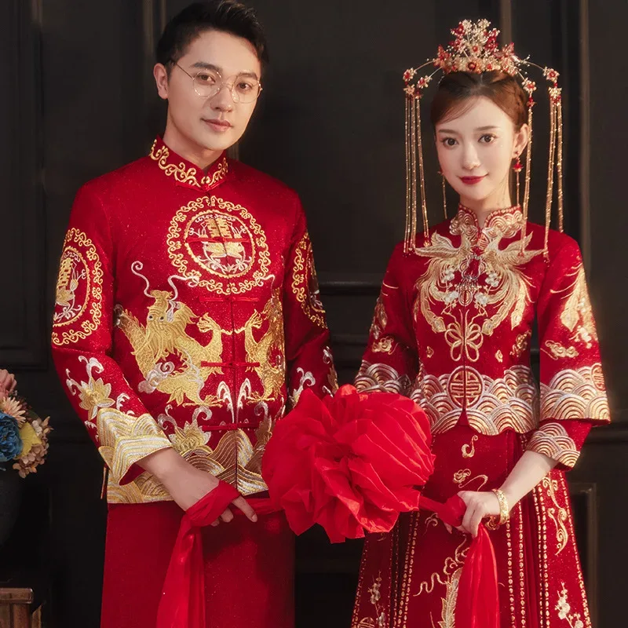 | 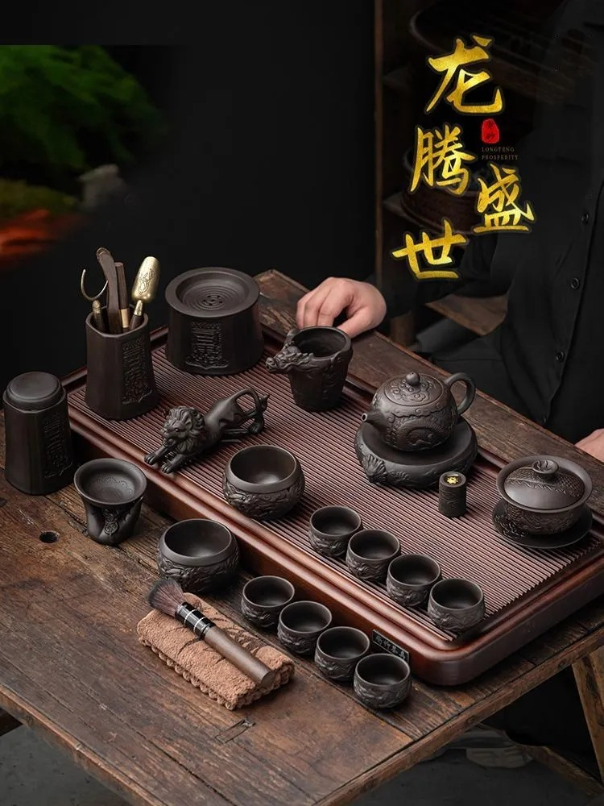 |
Увлечение историей и культурой естественным образом привело меня к изучению китайского языка.
Изначально я считала, что китайский язык невозможно выучить и понять: какие-то палки, точки, запятые. Благодаря новеллам и дорамам, а также изучению истории Китая (по профессиональной необходимости) мне пришлось познакомиться с культурой и языком ближе. И оглядываясь сейчас назад, в то время, когда я считала так же, как тысячи людей вокруг, могу сказать, что этот язык учить гораздо легче и приятнее, чем любой европейский.